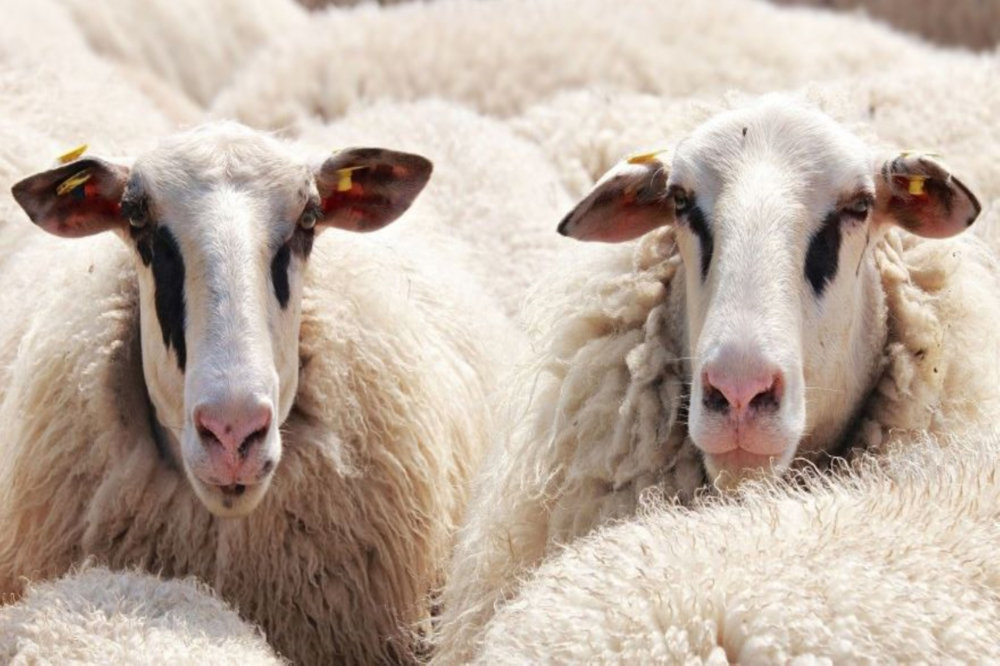
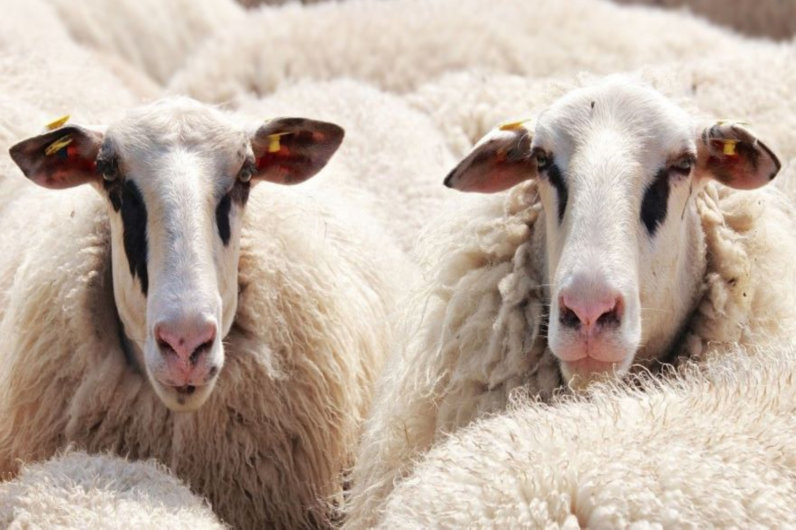

Trainings of Serbian SRO scientists at Host institution in the field of biomaterials compatibility experiments
The researchers from Serbian SRO will be trained at Host institution to design and implement experiments on domestic animals used as models in biomaterials compatibility estimating in preclinical scientific researches. Besides learning the basic principles of working with different species of animals and planning the experiments, the Serbian team will be introduced to the up-to-date methodology used in current research in biomaterials used in surgical procedures. Researchers from SRO will learn how to perform surgical procedures and postoperative monitoring of the animals with biomaterials implants. Also, molecular techniques on tissue acquired from different species of domestic animals will be tested. As overall result of activity 1. staff from Serbian SRO will be trained for conducting biomaterials compatibility experiments on laboratory and conventionally raised animals (pigs and sheep).